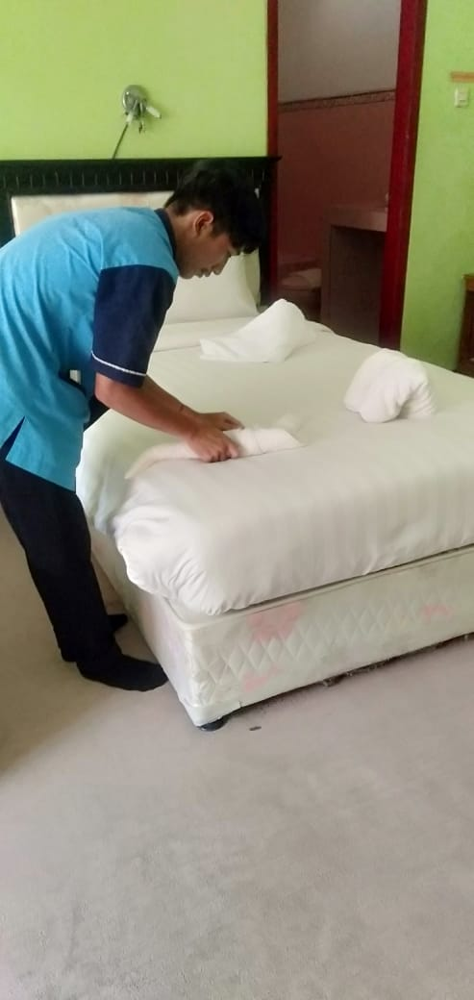

PERHOTELAN
Program keahlian perhotelan merupakan suatu program yang menghasilkan tenaga ahli dalam bidang perhotelan yang terampil dan kompeten di bidang pelayanan dasar perhotelan khususnya pemenuhan kebutuhan dasar manusia.
Lulusan jurusan perhotelan bisa bekerja sebagai pegawai hotel, event organizer, wedding organizer, staf maskapai penerbangan, chef, patissier, wirausahawan, dan masih banyak lagi.
